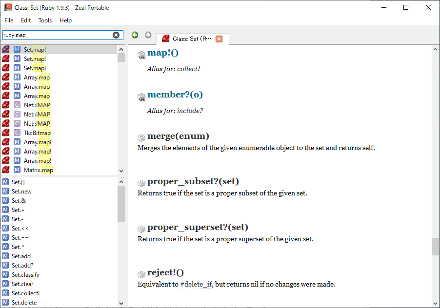

開発支援先で技術顧問の方がRubyのメソッドを調べる際にDashというアプリを使っているのを見て、
こんな便利なものがあるのかと初めて知りました。
Dashを入れてみようとしたところMacのみのようでした。
Windowsでも代用できるものか探したところZealというものがあったのでそちらを入れてみたいと思います。
Zealをインストール
scoopにあるかscoop search zealで調べるとあるようです。
scoop install zealでインストールします。
Zealを立ち上げる
Zealを立ち上げるとこのような画面がでてきます。
さっそく、ドキュメントをダウンロードしていきます。
ここではRubyのドキュメントをダウンロードしています。
ダウンロードできるドキュメントが公式サイトに載っており、現在は205ほど対応しているようです。
ドキュメントからメソッドを検索してみます。
ruby:mapはrubyドキュメントからmapという文字列を検索してくれます。

ひとまず使いそうなドキュメントをダウンロードしてみました。
まとめ
今までググってドキュメントを見ていましたがバージョンが違ったり、公式ドキュメント？なのかよくわからなかったりということがあったのですが、今後はZealでインストールしたドキュメントから検索すればよいので検索体験が向上しそうです。
英語ドキュメントなので辛いところはありますが読めない箇所は翻訳しつつ上手く活用しようと思います。